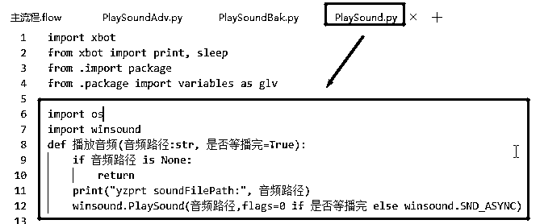
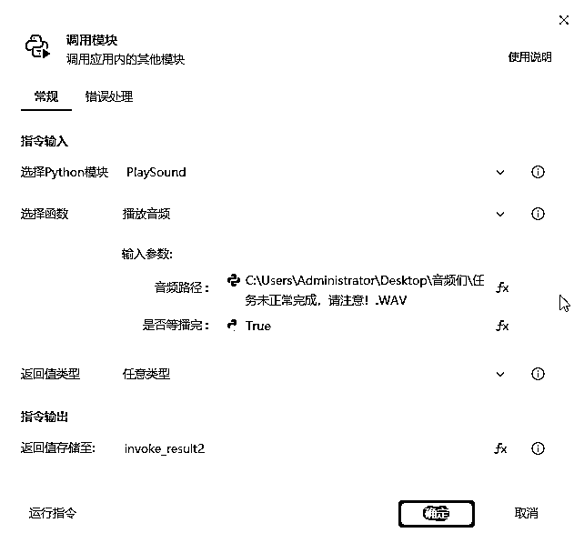
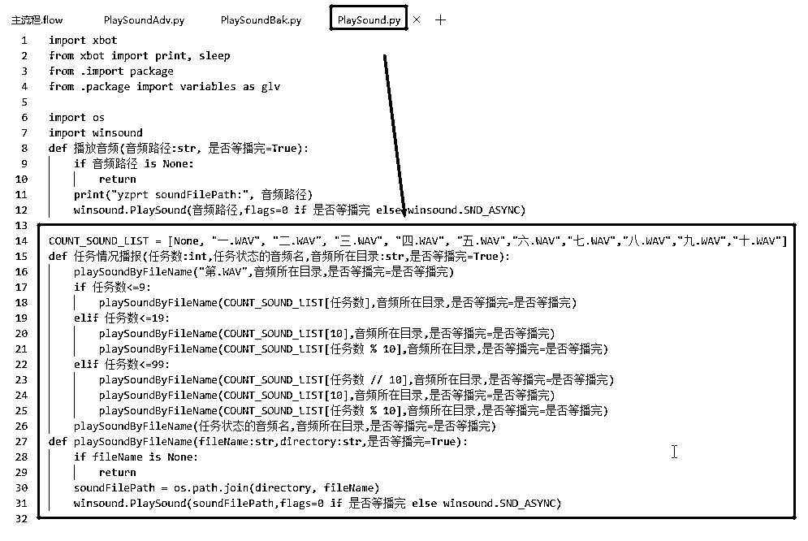
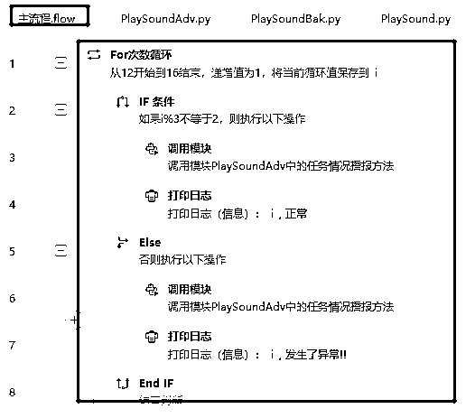
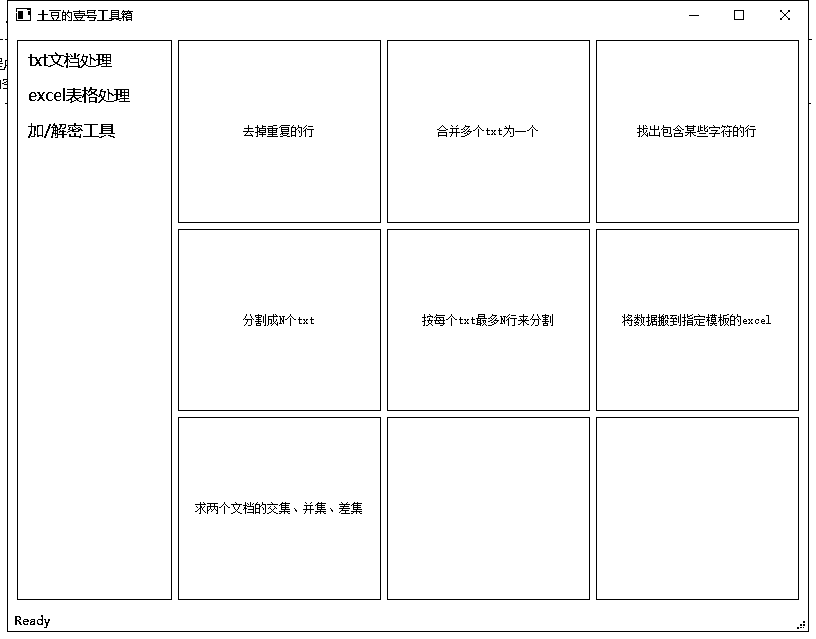

来源：https://xq23zki45o8.feishu.cn/docx/UdbfdqeS6oHlNtx1SWLcXM0Snjh
大家好，我是土豆，一个程序员，今年4月份加入生财圈并开始自己的自由职业探索。在我开始自由职业以前，其实我已经写出了很多可以稳定运行的自动化工具，只是不知道它有个学名叫做RPA。我是一个技术热爱者，早期用按钮精灵开发过各种小游戏的脚本和外挂；在体制内上班时经常用到Excel，后面发现了VBA（Office的拓展功能开发语言），就开发了一套文书自动生成系统；后面接触上了Python，由此更是开发出很多功能强大的软件与工具。接触影刀、UiBot这些东西是在今年五六月份以后的事了，看到这些开发工具我第一反应是挺不屑的，就像我之前接触了Python后，就把按键精灵、VBA这些东西永久打入冷宫一样。只是我发现生财圈挺多人用影刀的，为了跟大家有同频的语言，我特地又去影刀官网学习了影刀编程时的一些语法与规则，并在两天内取得了它的最高级证书。
说到RPA，就是在PC端或手机端模拟人工进行点击与操作的一套自动化流程，它的实现有影刀、UiBot、Python等方式。它们的优劣比较如下：
至于说的开发效率，未学过Python的当然觉得影刀快，但是对Python已经熟练的人来说，应该觉得还是Python更高效和优雅。其它的手机端的RPA有Python的uiautomator2（支持PC端发指令给多部手机独立同时运行脚本，控件元素获取更强大等）、影刀的手机自动化应用，安卓原生的Accessibility（单部手机上的自动化工具）及adb等方式，先不展开。然后要说一下影刀与Python，因为影刀的大多数实现都是基于Python的，所以影刀与Python其实早已“你中有我，我中有你”了，影刀可以调用Python的库进行拓展开发（用新建Python模块的方式），Python写好的代码封装成模块后也可以给影刀用。但是这种兼容与互通也是有局限性的，比如可以调用Python的标准库但自定义的库却不行，用Python封装好的库在给影刀调用时，经常也会遇到一些路径出错的问题等等。
聊完RPA的基本面，下面聊聊生活与工作中怎么将RPA运用到极致的话题。第一方面，RPA等于全自动吗？显然那些简单且重复性高的动作，看着一个软件机器人在那边帮你点这点那比你自己去点感觉爽多了。但RPA也不一定非要全自动化，比如小红书的爬取笔记及作者信息，一种方案是预定好流程，让它开始自动循环地去跑、去针对性的采集，第二种方案是人工在那边刷啊刷，看到中意的了，按下旁边的一个按钮，一键采集下笔记及作者的所有详细信息了。两种方案中前者固然更自动化，但是涉及到一些主观性强的、专业性高的，单单的预定条件不一定能一下子那么人工智能，反观后者，虽然摒弃全自动，但是更加灵活可靠，同时也至少能保证了80%以上的高效，因为自己刷啊刷的效率其实很高，影响速度的是你要去复制、粘贴、汇总、整理那些数据的那些操作呀！。第二方面，只有那些琐碎的、重复性高的，才要用到RPA吗？一键录屏+录声，一键搬运素材，一键加解密各类型文件这些常用功能我觉得也是广义上的RPA，并且你不用借助第三方软件（有的还要收费），不用担心数据泄露或者第三方软件的安全风险，你还可以根据自己的需求再进行功能上的拓展等等。另外说一下一键获取微信群所有成员昵称的这个功能，可能有人觉得这个功能其实挺鸡肋的。但是比如你推广某业务时拉了个微信群，其中有一部分人你确定是通过付费推广渠道A进来的，你想知道除了A渠道外的分享推荐进来的人数比例有多大，具体人员有哪些，这样你才能下一步决策是否继续付费推广以及针对性服务这些额外人群。这时你只要一键读出所有群成员，再一键跟你渠道A进来的人员做一下对比分析就全知道了，这样是不是就有一键分析运营数据的功能了！
说完RPA的应用，接下去聊聊如何成为PRA高手的话题了。高手是个相对的概念，现在用RPA的人越来越多，开发能力也是参差不齐，很入门的连基本的条件判断、循环、变量等都挺生疏，普通的就对这些熟悉并且会根据图形化编程搞出一些简单的脚本工具，再高阶的就是代码也会了、各种流程封装、第三方开源框架的应用、库和exe程序的打包移植等等。不同的水平代表了不同的开发拓展能力，下面以影刀的开发来具体说说：
影刀开发的工具脚本其实也可以直接用语音来播报进度的，这样避免程序异常了你都不知道或者省去你时不时去屏幕上查询的繁琐，前提是你得知道影刀的“Python模块”里有这种东西，会调用Python的winsound模块，会用“剪映”快速将自定义文本转成语音文件。你自己去发现这些，再去摸索并学会使用一般需要个过程，而当有人跟你说了这些之后，你再来照葫芦画瓢就快很多了。比如新建一个PlaySound.py模块，然后在主流程中调用就行了，如下图：


再比如同样上述播报功能，当你已经让程序循环跑一个任务了，比如爬小红书笔记信息，你想让它爬完一篇后按序号播报进度，但是怎么让它像按序号打日志信息那样去播报呢？序号对应的音频文件不会自动加1，音频文件只有零、一、二、三...十、百、千这固定的十几个，播到第二十三个怎么办？播到第一百零八个怎么办？这些逻辑你会处理的话功能开发就拓展得上去，不管来几百几千都没问题，处理不了的话只能一直局限在个位数及十几的序号播报了。同样的，只要给你一段代码并跟你说逻辑为什么要这么控制，那你至少可以把代码直接拿来使用，想搞得更通透的就去学一下里面的逻辑控制方法，开发能力也拓展了。比如按确切序号播报的方法如下图，基本原理是根据任务序号是几、十几、还是几十几分成三种不同情况去一一处理，若序号超过一百，也可以拓展出新的条件分支来处理：

相应的在主流程中也以这样测试：

同样的例子还有影刀除了自带的“自定义对话框”外，还可以有更加自定义的弹窗和UI界面，爬取数据不一定非要先通过获取控件元素，获取控件元素也不一定非要通过捕捉工具，对于笔记列表的自动下滑有多种方式，自动发布笔记的工具除了PC端还可通过手机端等等，就不一一细说了。
由此可见，高手是一个不断精进的过程，需要我们不断学习来提高认识，减小这个信息差带来的影响。那具体如何学呢？首先，如果你觉得日常需求用影刀或UiBot开发就够用，并且你也已经能较快地输出脚本的话，那学好影好或者UiBot应该就可以了，因为它们两款RPA工具，已经封装好了很多常用的功能，可以拿来即用。但是如果你想突破这两款工具的一些功能，打开另一个世界的话，比如突破影刀的复制限制，比如有其它更加自定义的需求，又比如想一键打包成自已的exe程序后进行商业化等等，那Python就是你的首选了。原因有以下几点：
再者，一些基本的、通用的自学渠道有影刀的官网教程 https://www.yingdao.com/yddoc/?，“菜鸟教程”的 Python教程 https://www.runoob.com/python3/python3-tutorial.html 等其。另外，学习过程中可以多去一些相关的技术论坛、技术群交流，避免一直闭门造车，有时你好久过不去的一个坎，别人说一下你就马上豁然开朗了。
关于RPA，本人分享一个自己开发的悬浮球工具（用Python开发，永久免费，本人郑重承诺无后门无风险）。工具下载：
（或百度网盘链接：链接：https://pan.baidu.com/s/1jEfsbOYKREb1Er9yFrL-VA?pwd=6666 ）
使用方法为下载压缩包后解压出来，点击运行相应的.exe程序，待悬浮球出现后，右键悬浮球，选择相应的功能即可。悬浮球大概长这样，左键可拖动，右键弹出自定义的功能菜单：
当前功能清单如下：
其中文本处理工具箱的UI界面及部分功能如下图：

关于悬浮球使用的其它详尽说明可参照链接： 。后续将不定时拓展更新此悬浮球，更新的链接将在教程同步更新，更新的内容也永久免费。
最后，如果你想更快地上手RPA，更高效学习RPA，或者更全面地了解这个领域的话，欢迎留言或私信了解更多！